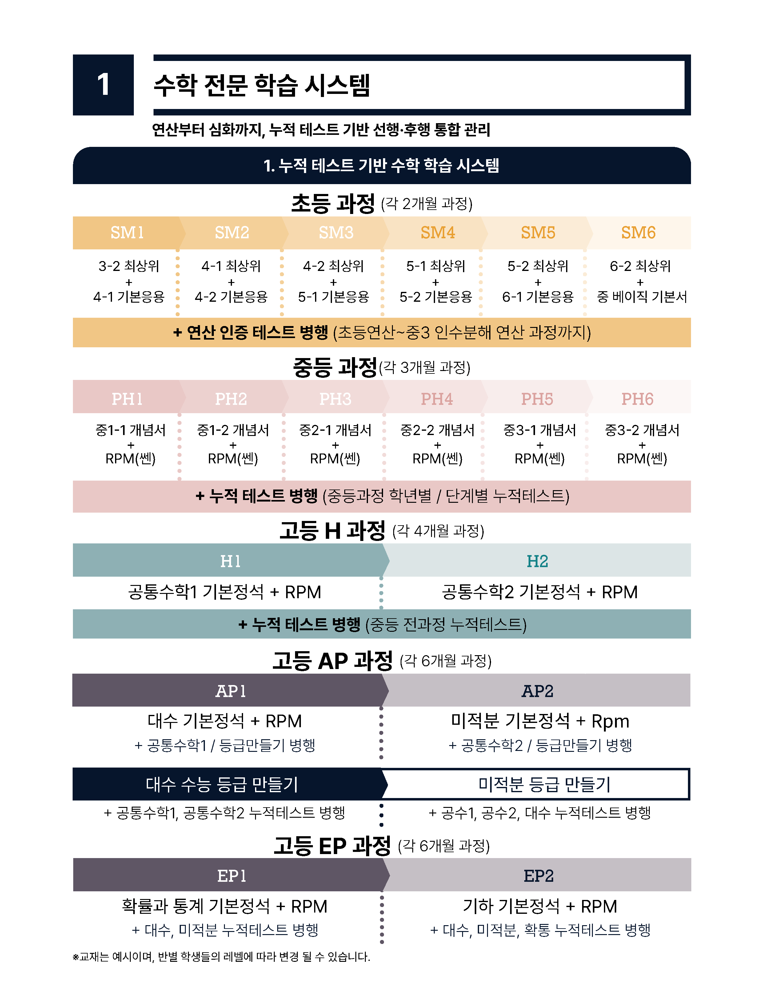
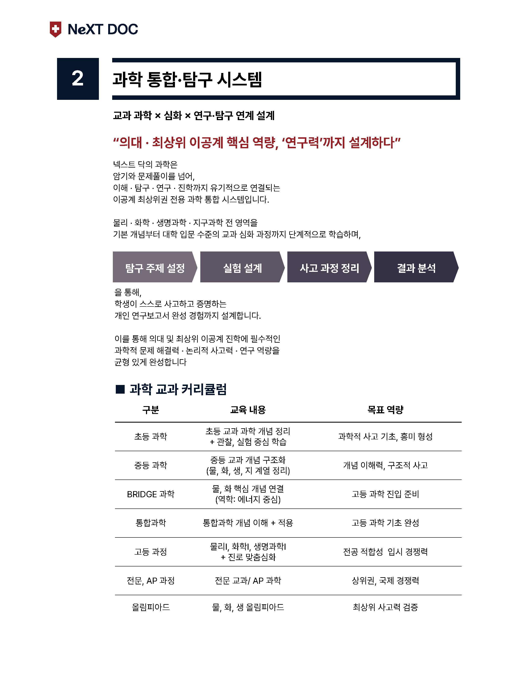
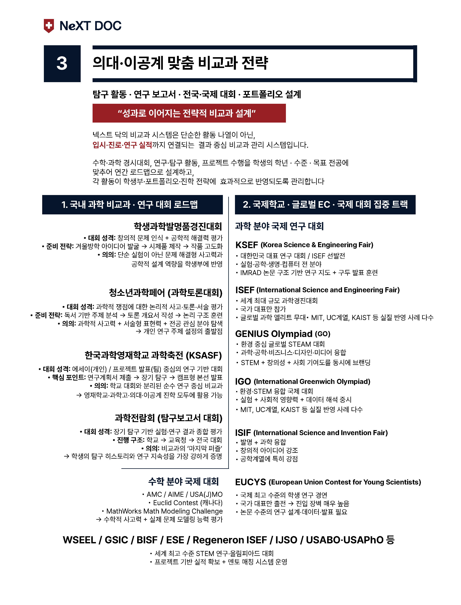
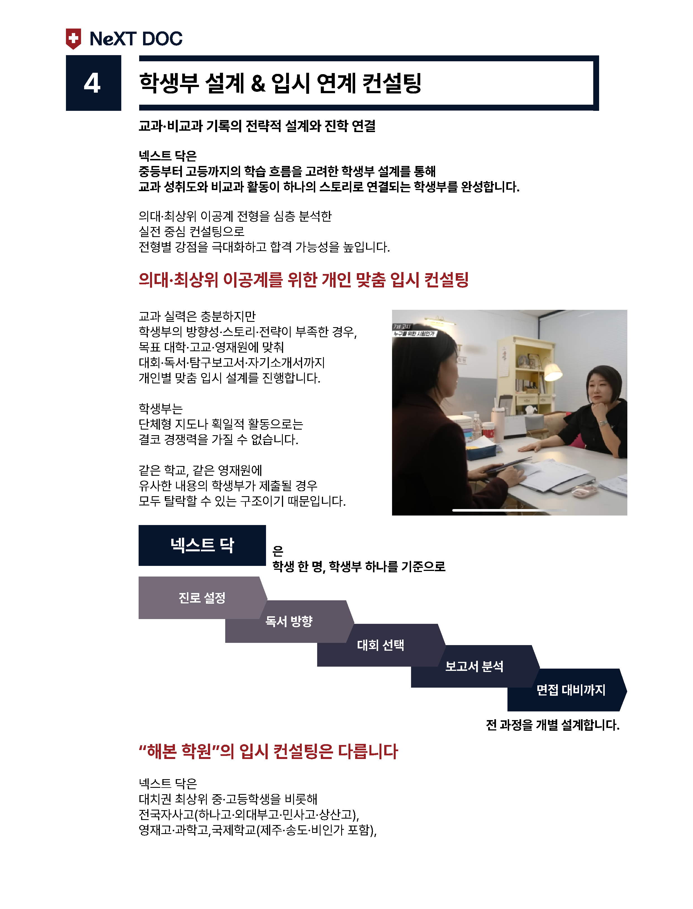
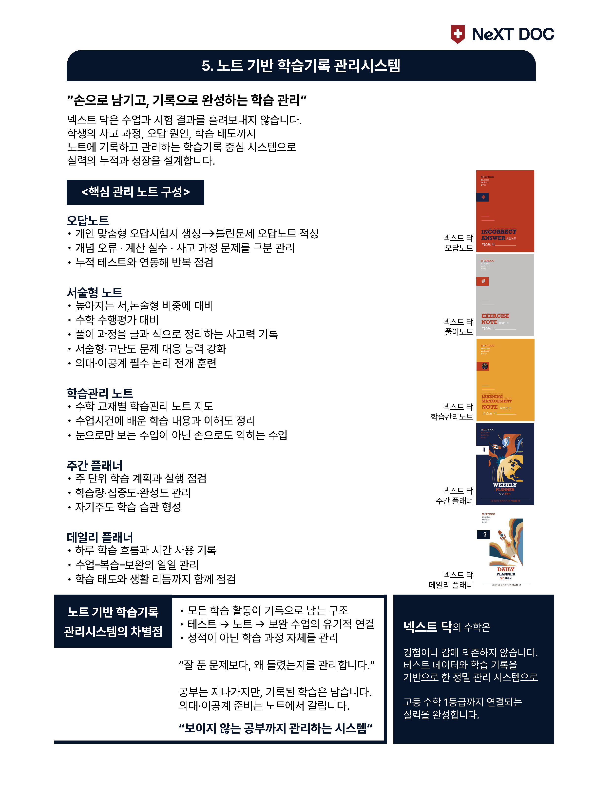

01. 수학 전문 계통 학습
"연산부터 심화까지, 흔들리지 않는 수학 역량"
- 초등 과정: 디딤돌 최상위S + 기본응용 (2개월 완성)
- 중등 과정: 개념 핵심 정리 + RPM | 쎈 마스터 (3개월 완성)
- 고등 과정: 의대 진학을 위한 H | AP | EP 연계형 심화

02. 과학 통합·탐구 시스템
"의대 진학의 핵심인 '연구력'과 '보고서' 전문 지도"
- 통합 브리핑: 물/화/생/지 전 영역의 유기적 원리 연결
- 실험 설계: 변인을 통제하고 가설을 검증하는 실험 교육
- 산출물 완성: 영재원 및 특목고 입시용 '탐구 보고서'

03. 맞춤형 비교과(EC) 전략
"나만의 차별화된 포트폴리오로 입시 경쟁력 확보"
- 국내외 대회: 발명품대회, 과학전람회 등 주제 선정 및 지도
- 국제 올림피아드: ISEF, AMC/AIME, Genius Olympiad 로드맵
- 영재원 대비: 교육청/대학부설 영재원 산출물 및 면접 케어

04. 학생부 설계 & 입시 연계 컨설팅
"합격생 데이터를 분석하여 학생부를 예술로 만듭니다"
- Dream Map: 희망 전공과 연계된 3년간의 통합 활동 기획
- 세특 관리: 교과 수업 중 탐구 역량이 돋보이는 소재 발굴
- 독서 로드맵: 전공 적합성을 드러내는 수준 높은 도서 추천

05. 노트 기반 학습기록 관리시스템
"손으로 남기고, 기록으로 완성하는 학습 관리"
넥스트 닥은 수업과 시험 결과를 흘려보내지 않습니다.
학생의 사고 과정, 오답 원인, 학습 태도까지
노트에 기록하고 관리하는 학습기록 중심 시스템으로
실력의 누적과 성장을 설계합니다.
- All-Care 노트: 강의 요약 및 피드백 중심의 완전 학습
- 메타인지 훈련: 아는 것과 모르는 것을 명확히 구분하는 습관
